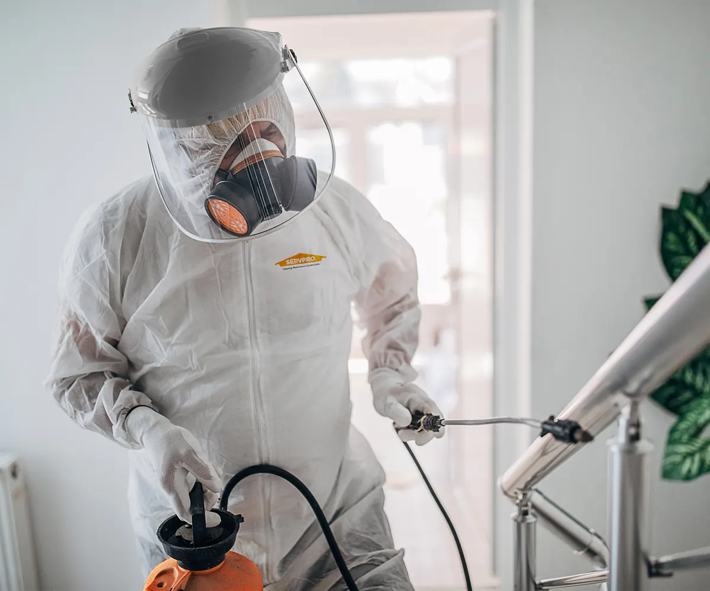

Incidentreiniging
Beoordeling en reiniging na een onverwachte gebeurtenis of ernstige plaatselijke vervuiling.
Specialistische & urgente reiniging
Bij incidenten, biohazard, ernstige vervuiling of gevoelige omstandigheden beoordeelt Induclean wat nodig is en welke inzet mogelijk is. De aanpak blijft praktisch, discreet en afgestemd op de locatie.

Beheerste aanpak
Geen specialistische situatie is hetzelfde. Daarom bespreken we eerst wat er is gebeurd, welke ruimtes betrokken zijn en of direct handelen nodig en haalbaar is.
Op basis van de beschikbare informatie bepalen we de vervolgstap. Waar nodig vragen we om foto’s of plannen we een opname voordat werkzaamheden en kosten worden vastgelegd.
Mogelijkheden
De precieze inzet wordt altijd per situatie bepaald.
Beoordeling en reiniging na een onverwachte gebeurtenis of ernstige plaatselijke vervuiling.
Zorgvuldige aanpak van biologische vervuiling en andere situaties met aanvullende hygiëne-eisen.
Discrete reiniging met respect voor betrokkenen, omgeving en gemaakte afspraken.
Gerichte reiniging en desinfectie van betrokken oppervlakken en ruimtes.
Aanpak van hardnekkige geur, rook- of nicotineaanslag als onderdeel van de opdracht.
Grondige reiniging wanneer een normale schoonmaakbeurt niet toereikend is.
Waarom Induclean
Bij spoed bespreken we telefonisch wat er aan de hand is en welke vervolgstap mogelijk is.
U weet welke ruimtes en werkzaamheden binnen de afgesproken opdracht vallen.
Afstemming over toegang, planning en oplevering verloopt via één aanspreekpunt.
Werkwijze
Snel waar nodig, zorgvuldig waar het moet.
Bel bij spoed of stuur de beschikbare informatie via het formulier.
We bepalen wat nodig is en of directe of geplande inzet mogelijk is.
Omvang, toegang, planning en werkzaamheden worden duidelijk vastgelegd.
De locatie wordt volgens de afgesproken aanpak behandeld en opgeleverd.
Gerelateerde oplossingen
Bel direct bij spoed. Is de situatie minder urgent, stuur dan de locatie en een korte omschrijving via het formulier.